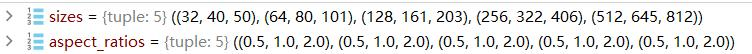

锚点生成器——AnchorsGenerator¶
参考链接：
- https://github.com/WZMIAOMIAO/deep-learning-for-image-processing
- https://github.com/pytorch/vision/tree/master/torchvision/models/detection
类初始化
需要指明两组参数：
-
sizes：锚点尺度，即每个锚点的大小 -
aspect_ratios：锚点宽高比例
注：
-
sizes与aspect_ratios具有一一对应的关系，每一个尺度对应一个比例。并且均为tuple类型 -
sizes与aspect_ratios一般为二维数据，即每个元组数据也同样是元组类型，第一层表示参与预测的特征层，第二层表示当前特征层的锚点尺度、比例信息
例如：
anchor_sizes = tuple((x, int(x * 2 ** (1.0 / 3)), int(x * 2 ** (2.0 / 3)))
for x in [32, 64, 128, 256, 512])
aspect_ratios = ((0.5, 1.0, 2.0),) * len(anchor_sizes)
anchor_generator = AnchorsGenerator(anchor_sizes, aspect_ratios)
输入如下图所示：

上图中一共用5层预测特征，每层特征层上的锚点有3个比例、3个尺度（RetinaNet网络设置）。
前向传播
输入：
-
image_list：用于得到图像宽高尺寸； -
feature_maps：list格式，用于得到每层预测特征图的宽高尺寸。
例如：
anchors = self.anchor_generator(images, features)
输出：
anchors：所有的锚点坐标，尺寸为[N,4]，其中N表示锚点数量
代码实现¶
from typing import List, Optional, Dict
import torch
from torch import nn, Tensor
from .image_list import ImageList
class AnchorsGenerator(nn.Module):
__annotations__ = {
"cell_anchors": Optional[List[torch.Tensor]],
"_cache": Dict[str, List[torch.Tensor]]
}
# sizes表示anchor的尺度，代表不同的预测特征层，len(sizes)==特征层数
def __init__(self, sizes=(128, 256, 512), aspect_ratios=(0.5, 1.0, 2.0)):
super(AnchorsGenerator, self).__init__()
# 判断是不是正确的类型
if not isinstance(sizes[0], (list, tuple)):
# TODO change this
sizes = tuple((s,) for s in sizes)
if not isinstance(aspect_ratios[0], (list, tuple)):
aspect_ratios = (aspect_ratios,) * len(sizes)
# len(sizes)需与与len(aspect_ratios)相等，对应特征层数量
assert len(sizes) == len(aspect_ratios)
# 尺度信息
self.sizes = sizes
# 此时aspect_ratios为列表类型，里面是len(sizes)个元组，即每个特征层尺度对应一个ratios
self.aspect_ratios = aspect_ratios
# 锚点模板
self.cell_anchors = None
# 锚点图缓存
self._cache = {}
# 传入scale尺度，和对应的aspect_ratios
def generate_anchors(self, scales, aspect_ratios, dtype=torch.float32, device=torch.device("cpu")):
# type: (List[int], List[float], torch.dtype, torch.device) -> Tensor
"""
compute anchor sizes
Arguments:
scales: sqrt(anchor_area)
aspect_ratios: h/w ratios
dtype: float32
device: cpu/gpu
"""
# 先转化数据,scales为一个整数，如32，aspect_ratios为所有的尺度(0.5,1,2)
scales = torch.as_tensor(scales, dtype=dtype, device=device)
aspect_ratios = torch.as_tensor(aspect_ratios, dtype=dtype, device=device)
# 保持面积不变的情况下，调整高宽为指定的比例
# 需要先开根，此时直接得到高比例
h_ratios = torch.sqrt(aspect_ratios)
# h_ratios取到数得到宽比例
w_ratios = 1.0 / h_ratios
# [r1, r2, r3]' * [s1, s2, s3]
# number of elements is len(ratios)*len(scales)
# 得到锚点高宽信息，面积为scale^2大小，不变，即特征图上一个像素点对应原图的面积不变，
# 只是原来每个像素点只能代表正方形，生成了锚点图之后，每个像素点就可以代表矩形了，矩形高宽比例由aspect_ratios决定
# 每个特征层一个尺度，三个高宽比例->一共3个锚点，这里ws表示3个锚点的宽，hs表示3个锚点的高
ws = (w_ratios[:, None] * scales[None, :]).view(-1)
hs = (h_ratios[:, None] * scales[None, :]).view(-1)
# left-top, right-bottom coordinate relative to anchor center(0, 0)
# 生成的anchors模板都是以（0, 0）为中心的, shape [len(ratios)*len(scales), 4]，[锚点数量，4]
# 像素点放于中间，即0,0表示中心像素点，而定位锚点检测框的坐标位于0,0两侧
# 因此这里的坐标为两负两正，最后再除以2
base_anchors = torch.stack([-ws, -hs, ws, hs], dim=1) / 2
# round 四舍五入，返回锚点模板
return base_anchors.round()
# 生成锚点模板，尺寸为(len(scales)*len(aspect_ratios),4)，一组特征图对应一个scales，而一个scale对应3个ratios，即一般为(3,4)
def set_cell_anchors(self, dtype, device):
# type: (torch.dtype, torch.device) -> None
# 第一次调用set_cell_anchors时，模板为空，需要继续往下走，创建模板
if self.cell_anchors is not None:
# 如果不是第一次调用，则存在锚点模板，直接返回即可
cell_anchors = self.cell_anchors
assert cell_anchors is not None
# suppose that all anchors have the same device
# which is a valid assumption in the current state of the codebase
if cell_anchors[0].device == device:
return
# 根据提供的sizes和aspect_ratios生成anchors模板
# anchors模板都是以(0, 0)为中心的anchor。模板为列表类型，列表长度与特征层数匹配。resnet50_fpn生成了5个列表，均为3*4的模板(三个检测框，每个检测框四个坐标)
cell_anchors = [
# 利用generate_anchors函数生成
self.generate_anchors(sizes, aspect_ratios, dtype, device)
# 遍历所有的特征层，resnet50_fpn中共有5个特征层参与检测
# 得到对应的size(尺度，步长)与aspect_ratios(对应的检测框高宽比例)
# 每个特征图上锚点图的尺寸均为(锚点数,4)
# 最终得到一个列表，列表长度代表参与检测的特征层数量，列表上的数值为锚点模板坐标(以锚点中心为原点的坐标)
for sizes, aspect_ratios in zip(self.sizes, self.aspect_ratios)
]
# 赋值锚点模板，这里模板的高宽对应原图尺度
self.cell_anchors = cell_anchors
def num_anchors_per_location(self):
# 计算每个预测特征层上每个滑动窗口的预测目标数
return [len(s) * len(a) for s, a in zip(self.sizes, self.aspect_ratios)]
# For every combination of (a, (g, s), i) in (self.cell_anchors, zip(grid_sizes, strides), 0:2),
# output g[i] anchors that are s[i] distance apart in direction i, with the same dimensions as a.
def grid_anchors(self, grid_sizes, strides):
# type: (List[List[int]], List[List[Tensor]]) -> List[Tensor]
"""
anchors position in grid coordinate axis map into origin image
计算预测特征图对应原始图像上的所有anchors的坐标，即生成一张锚点图
Args:
grid_sizes: 预测特征矩阵的height和width
strides: 预测特征矩阵上一步对应原始图像上的步距
"""
# 初始化锚点图
anchors = []
# 锚点模板
cell_anchors = self.cell_anchors
assert cell_anchors is not None
# 遍历每个预测特征层的grid_size，strides和cell_anchors。特征层与scale匹配，而scale与锚点模板cell_anchors一一对应
for size, stride, base_anchors in zip(grid_sizes, strides, cell_anchors):
grid_height, grid_width = size # 该特征层产生的特征图高、宽
stride_height, stride_width = stride # 尺度信息，即特征图上一个像素点代表原图多少个像素点(感受野)
device = base_anchors.device
# For output anchor, compute [x_center, y_center, x_center, y_center]
# shape: [grid_width] 对应原图上的x坐标(列)，每隔stride_width产生一个值
shifts_x = torch.arange(0, grid_width, dtype=torch.float32, device=device) * stride_width
# shape: [grid_height] 对应原图上的y坐标(行)，每隔stride_height产生一个值，下一行的y值是基于上一行的
shifts_y = torch.arange(0, grid_height, dtype=torch.float32, device=device) * stride_height
# 计算预测特征矩阵上每个点对应原图上的坐标(anchors模板的坐标偏移量)
# torch.meshgrid函数分别传入行坐标和列坐标，生成网格行坐标矩阵和网格列坐标矩阵
# shape: [grid_height, grid_width]
shift_y, shift_x = torch.meshgrid(shifts_y, shifts_x) # 行列重复
shift_x = shift_x.reshape(-1) # 拉直，再拼接，从而表示一张图中所有的点
shift_y = shift_y.reshape(-1)
# 下面计算anchors坐标(xmin, ymin, xmax, ymax)在原图上的坐标偏移量
# shape: [grid_width*grid_height, 4]
# 这里得到所有点的坐标(特征图上的点映射到原图上)，总数为特征图长宽之积，再乘以len(scale)，一般为1，即每个特征层对应一个scale
# 这里相当于将特征图上的所有像素点按特定的间距映射到原图上，即得到每个锚点检测框的中心位置
shifts = torch.stack([shift_x, shift_y, shift_x, shift_y], dim=1)
# For every (base anchor, output anchor) pair,
# offset each zero-centered base anchor by the center of the output anchor.
# 将anchors模板与原图上的坐标偏移量相加得到原图上所有anchors的坐标信息(shape不同时会使用广播机制)
# 上面得到了所有锚点中心的坐标，而锚点模板正是以0,0为中心，两个变量相加，正好得到了以特征图每个像素点为中心，映射到原图的锚点检测框坐标
# 这里应用了广播机制，锚点中心复制了w*h倍，锚点模板复制了3倍(三个模板对应于三种比例)
shifts_anchor = shifts.view(-1, 1, 4) + base_anchors.view(1, -1, 4)
# 最后转换形状，得到该特征层中所有的锚点图，即该特征层上共有w*h个像素点，每个像素点对应3个锚点检测框(比例ratios数量)
anchors.append(shifts_anchor.reshape(-1, 4))
# 最后返回所有的锚点图
return anchors # List[Tensor(all_num_anchors, 4)]
def cached_grid_anchors(self, grid_sizes, strides):
# type: (List[List[int]], List[List[Tensor]]) -> List[Tensor]
"""将计算得到的所有anchors信息进行缓存"""
key = str(grid_sizes) + str(strides)
# self._cache是字典类型，初始化为空字典
if key in self._cache:
# 如果之前计算过(缓存里有)，则直接返回计算好的就可以
return self._cache[key]
# 如果没有，则计算一个
anchors = self.grid_anchors(grid_sizes, strides)
self._cache[key] = anchors
return anchors
def forward(self, image_list, feature_maps):
# type: (ImageList, List[Tensor]) -> List[Tensor]
# feature_maps表示预测特征层，image_list表示图片
# 获取每个预测特征层的尺寸(height, width)
grid_sizes = list([feature_map.shape[-2:] for feature_map in feature_maps])
# 获取输入图像的height和width
image_size = image_list.tensors.shape[-2:]
# 获取变量数据类型和设备类型
dtype, device = feature_maps[0].dtype, feature_maps[0].device
# one step in feature map equate n pixel stride in origin image
# 计算特征层上的一步等于原始图像上的步长，即感受野，也叫尺度
# 图像大小除以特征图大小，得到尺度(整数)
strides = [[torch.tensor(image_size[0] // g[0], dtype=torch.int64, device=device),
torch.tensor(image_size[1] // g[1], dtype=torch.int64, device=device)] for g in grid_sizes]
# 根据提供的sizes和aspect_ratios生成anchors模板(以像素点为中心)
self.set_cell_anchors(dtype, device)
# 计算/读取所有anchors的坐标信息（这里的anchors信息是映射到原图上的所有anchors信息，不是anchors模板）
# 得到的是一个list列表，对应每张预测特征图映射回原图的anchors坐标信息
# 传入特征图尺寸和对应的strides(特征图与原图比例)，传回锚点图(一个列表，对应于不同的特征层)
anchors_over_all_feature_maps = self.cached_grid_anchors(grid_sizes, strides)
anchors = torch.jit.annotate(List[List[torch.Tensor]], [])
# 这里相当于做一个重复，将得到的锚点图重复batch次
for i, (image_height, image_width) in enumerate(image_list.image_sizes):
anchors_in_image = []
# 这里其实可以直接append添加，不用for循环遍历
for anchors_per_feature_map in anchors_over_all_feature_maps:
anchors_in_image.append(anchors_per_feature_map)
anchors.append(anchors_in_image)
# 将每一张图像的所有预测特征层的anchors坐标信息拼接在一起
# anchors是个list，每个元素为一张图像的所有anchors信息
# 将每张图片里的锚点坐标图合并起来，得到的列表长度与batch数值一致，相当于将一张图中所有特征层的锚点坐标合并起来了
anchors = [torch.cat(anchors_per_image) for anchors_per_image in anchors]
# Clear the cache in case that memory leaks.
self._cache.clear()
# 返回生成的锚点
return anchors
注：以上仅是笔者个人见解，若有问题，欢迎指正
初步完稿于2023年1月17日